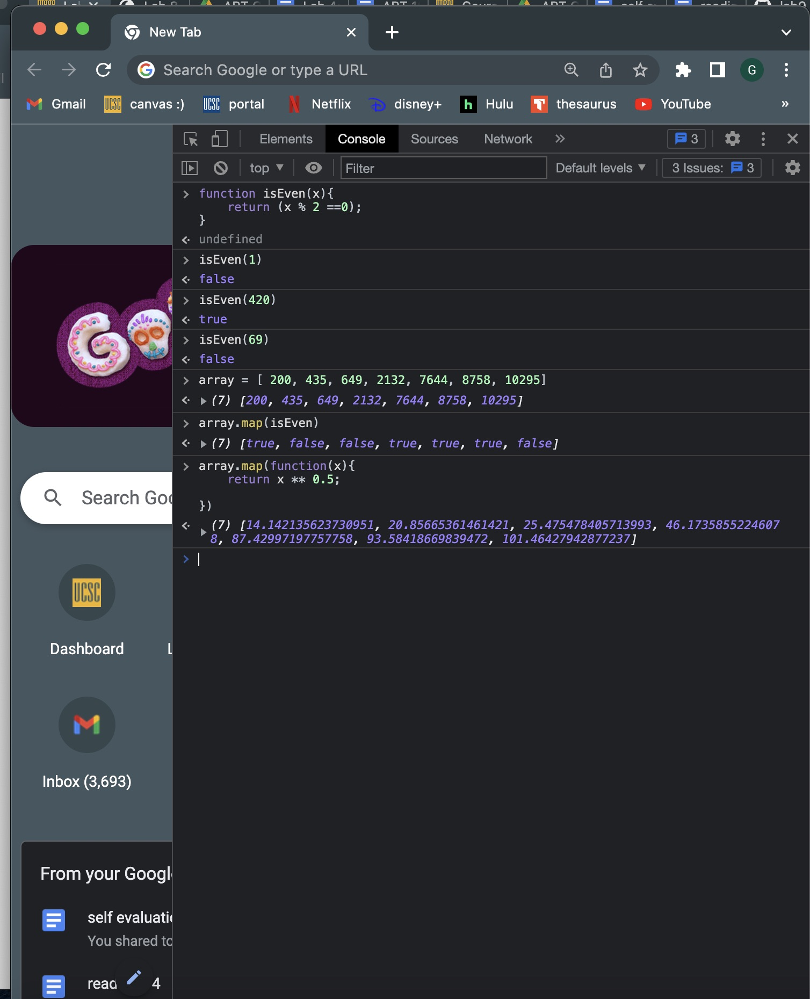

Diamond and I are working together per usual! Partner besties for five-ever!!!
The biggest challenge we faced was creating the arrays in the console. The numbers part was even more challeneging for me than the last time we had to do stuff in the console. Once we got them working correctly it was then a challenge of getting all that nonsense into the java script file and then on the website. Not very slay.
Go to the console to see the output, or here's a picture if you want lol:
